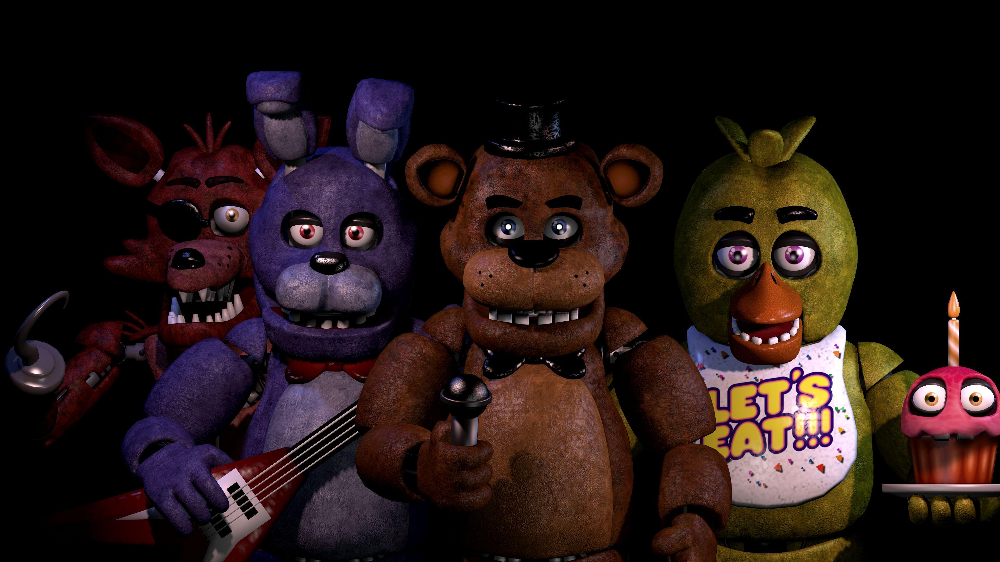
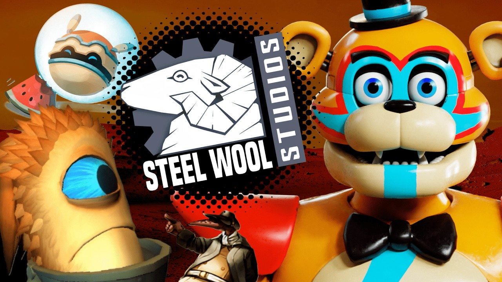

Historia de Five Nights at Freddy's
Regresar

La historia de Five Nights at Freddy's (FNAF) es uno de los relatos de redención más inusuales de la industria de los videojuegos, naciendo literalmente del fracaso y las duras críticas.
A principios de la década de 2010, el desarrollador independiente Scott Cawthon creaba videojuegos familiares y de temática cristiana. Su lanzamiento de 2013, Chipper & Sons Lumber Co., un juego sobre un castor leñador, fue destrozado por la crítica. Los reseñadores se quejaron de que los personajes parecían "animatrónicos espeluznantes" con miradas muertas e inquietantes. Cawthon cayó en una profunda depresión y estuvo a punto de abandonar la programación por completo. Sin embargo, en lugar de rendirse, decidió abrazar la crítica: si la gente pensaba que sus personajes daban miedo, haría un juego deliberadamente aterrador utilizando esa misma estética.
El Terror de la Inmovilidad (2014)
En agosto de 2014, Cawthon lanzó Five Nights at Freddy's, programado en el sencillo motor Clickteam Fusion. El jugador asumía el rol de Mike Schmidt, el guardia nocturno de Freddy Fazbear's Pizza, un restaurante familiar inspirado en Chuck E. Cheese.
La genialidad mecánica de FNAF fue arrebatarle al jugador la principal herramienta de los juegos de terror modernos: la movilidad. Pegado a una silla, el jugador solo podía interactuar con un monitor de cámaras de seguridad, encender las luces de los pasillos y cerrar un par de puertas blindadas. Sin embargo, todas estas acciones consumían una batería muy limitada. Si la energía se agotaba, el oso Freddy Fazbear atacaba en la oscuridad. Esta constante gestión de recursos, combinada con la paranoia de vigilar a los animatrónicos (Freddy, Bonnie, Chica y Foxy) mientras se movían sigilosamente hacia la oficina, creó una fórmula de tensión psicológica perfecta.

El Efecto YouTube y el "Lore" Oculto (2014-2018)
El juego se convirtió de la noche a la mañana en un fenómeno viral masivo gracias a los creadores de contenido en YouTube (como Markiplier, Jacksepticeye y Fernanfloo). Las reacciones exageradas a los jump scares (sustos repentinos) propulsaron las ventas del juego a niveles estratosféricos.
Pero lo que garantizó la longevidad de la franquicia fue su narrativa. En lugar de contar la historia directamente, Cawthon la ocultó. Los jugadores debían encontrar recortes de periódico borrosos en el fondo de los escenarios, analizar alucinaciones auditivas y jugar minijuegos de estilo Atari de 8 bits que aparecían aleatoriamente al perder una partida.
Esto desató una cultura de teoría y deducción comunitaria masiva en foros y canales como The Game Theorists. Los fans ensamblaron la oscura historia de William Afton (el "Hombre Morado"), un asesino en serie que mató a niños en la pizzería y ocultó sus cuerpos dentro de los trajes animatrónicos, provocando que estos cobraran vida en busca de venganza.
Cawthon capitalizó esta obsesión con un ritmo de desarrollo frenético, lanzando secuelas que alteraban constantemente las mecánicas de supervivencia:
- FNAF 2 (2014): Eliminó las puertas y obligó al jugador a usar una máscara de Freddy para engañar a una nueva generación de animatrónicos "Toy".
- FNAF 3 (2015): Introdujo un solo enemigo real (Springtrap, el traje donde el asesino original quedó atrapado y murió).
- FNAF 4 (2015): Abandonó la pizzería por la habitación de un niño aterrorizado, basando la jugabilidad casi exclusivamente en la escucha de pistas de audio (respiraciones) en la oscuridad.
- Sister Location (2016) y Pizzeria Simulator (2017): Introdujeron actuación de voz completa, mecánicas de ciencia ficción más pulidas y elementos de gestión de negocios.
El Salto a las 3D y la Era Steel Wool (2019-2021)
Al darse cuenta de que la franquicia había superado las capacidades de su motor 2D original y de lo que un solo hombre podía programar, Cawthon se asoció con el estudio independiente Steel Wool Studios.
El resultado fue FNAF: Help Wanted (2019), un juego de Realidad Virtual desarrollado en Unreal Engine que recreaba los juegos clásicos en verdaderas 3D, ofreciendo un nivel de inmersión terrorífico y revitalizando la marca para una nueva generación de hardware.
La culminación de esta nueva etapa tecnológica llegó con FNAF: Security Breach (2021). Este título rompió completamente con la fórmula original. En lugar de estar confinado en una oficina vigilando cámaras, el jugador controlaba a un niño (Gregory) corriendo libremente por el "Mega Pizzaplex", un gigantesco centro comercial de neón, huyendo de los animatrónicos Glamrock e incluso utilizando a una versión amigable de Freddy como armadura protectora tipo mecha.

El Imperio Multimedia (Actualidad)
Cawthon anunció su retiro del desarrollo activo de los videojuegos en 2021, pero la franquicia que creó se ha consolidado como un gigante del entretenimiento. Se ha expandido a través de una inmensa y exitosa serie de novelas (como The Silver Eyes) y colecciones de cuentos de terror (Fazbear Frights) que amplían su complejo universo.
El punto culminante de su impacto cultural se materializó en 2023 con el estreno de la adaptación cinematográfica producida por Blumhouse (protagonizada por Josh Hutcherson y Matthew Lillard). A pesar de una recepción mixta por parte de la crítica tradicional, la película fue un éxito rotundo en taquilla, recaudando casi 300 millones de dólares y demostrando que lo que comenzó como un modelo de castor mal diseñado se ha convertido en la franquicia de terror definitoria de la Generación Z.
Evolución de los Juegos Principales
Juego |
Año |
Desarrollador |
Innovación Principal |
|---|---|---|---|
| Five Nights at Freddy's | 2014 | Scott Cawthon | Inmovilidad total del jugador y gestión estricta de energía para las puertas. |
| Five Nights at Freddy's 2 | 2014 | Scott Cawthon | Eliminación de puertas; introducción de la máscara de Freddy y la caja de música. |
| FNAF 4 | 2015 | Scott Cawthon | Cambio de escenario a una habitación; dependencia absoluta de pistas de audio (respiraciones). |
| FNAF: Help Wanted | 2019 | Steel Wool Studios | Recreación de la fórmula clásica en un entorno inmersivo de Realidad Virtual (VR). |
| FNAF: Security Breach | 2021 | Steel Wool Studios | Primer juego de la saga con exploración libre en 3D (Free-roam) y mecánicas de sigilo activo. |